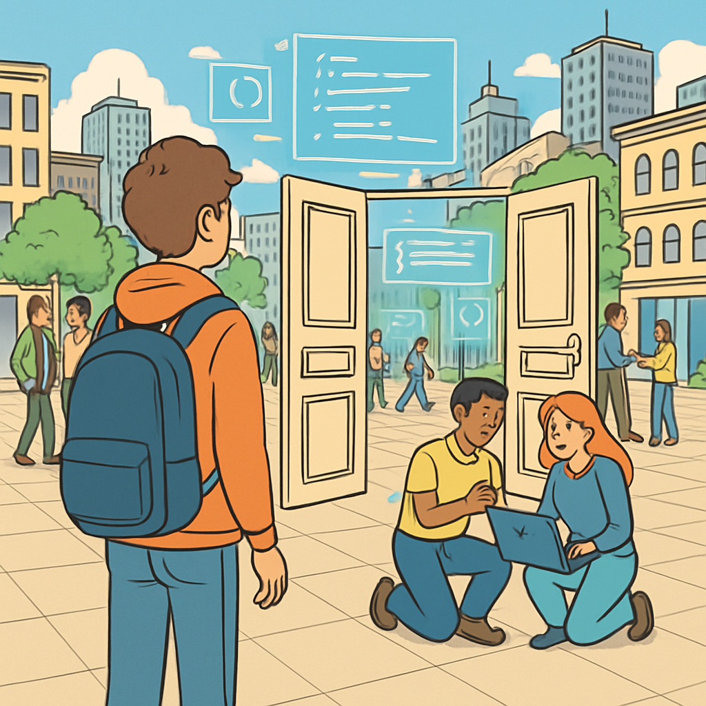

Microlearning
Open-Source-Software ist Software, deren Quellcode öffentlich zugänglich ist. Jede:r kann sie nutzen, studieren, verändern und weiterverbreiten. Das klingt simpel – hat aber enorme Auswirkungen auf Nachhaltigkeit.

Warum Open Source nachhaltiger sein kann:
- Keine doppelte Entwicklung: Gemeinsamer Code statt proprietäre Insellösungen – weniger Ressourcenverschwendung
- Langlebigkeit: Open-Source-Projekte können von der Community weitergeführt werden, auch wenn die Originalentwickler:innen aufhören
- Reparierbarkeit: Offener Code kann gefixt, angepasst und optimiert werden – auch Jahre nach dem Release
- Digitale Souveränität: Keine Abhängigkeit von einem einzelnen Anbieter (Vendor Lock-in)
Wichtige Open-Source-Lizenzen, die du kennen solltest:
- MIT-Lizenz: Sehr permissiv – du kannst fast alles damit machen, auch kommerziell
- GPL (GNU General Public License): Copyleft – abgeleitete Werke müssen ebenfalls Open Source sein
- Apache 2.0: Ähnlich wie MIT, aber mit explizitem Patentschutz
Open Source ist kein Allheilmittel: Projekte brauchen aktive Pflege, Dokumentation und Finanzierung. Aber als Grundprinzip fördert es eine nachhaltigere digitale Welt.
Tat / Einstellung
Werde Teil der Open-Source-Community – und sei es nur mit einem kleinen Schritt. Du musst nicht gleich Code beitragen.
Aufgabe
- Denke an ein Open-Source-Projekt, das du täglich nutzt (z. B. VS Code, Firefox, Git, Linux, Node.js, Python)
- Öffne dessen GitHub-Repository
- Gib dem Projekt einen Star ⭐ – das zeigt den Maintainern, dass ihre Arbeit geschätzt wird
- Lies die Contributing Guidelines (
CONTRIBUTING.md) – so lernst du, wie Zusammenarbeit in grossen Projekten funktioniert
Bonus: Schau dir die Issues an – gibt es welche mit dem Label
good first issue? Das sind Einstiegspunkte für neue Contributor:innen.
Reflexion
Was hat Open Source mit Nachhaltigkeit zu tun – und was nicht?
Open Source fördert Nachhaltigkeit durch geteilte Ressourcen, Langlebigkeit und Reparierbarkeit. Aber: Auch Open-Source-Software kann ineffizient sein, unnötige Ressourcen verbrauchen oder schlecht gewartet werden. Die Lizenz allein macht Software nicht nachhaltig – es kommt auf die Community, die Architektur und die bewusste Weiterentwicklung an. Nachhaltigkeit ist kein Feature, sondern eine Haltung.
Challenge
Leiste deinen ersten Open-Source-Beitrag! Das muss kein Code sein – auch Dokumentation ist extrem wertvoll.
Wähle eine dieser Optionen:
- Bug Report: Hast du einen Fehler in einem Tool gefunden? Erstelle ein gut strukturiertes Issue auf GitHub
- Doku verbessern: Finde einen Tippfehler oder eine unklare Anleitung und erstelle einen Pull Request
- Übersetzung: Viele Projekte suchen Hilfe bei der Lokalisierung – übersetze eine Seite ins Deutsche
Dokumentiere deinen Beitrag mit einem Screenshot oder Link.